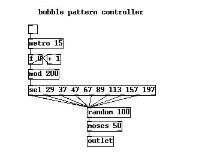
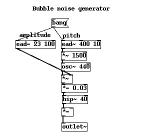
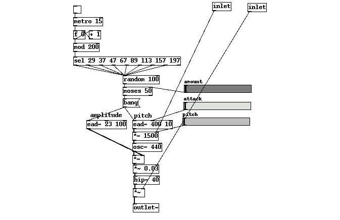

One concept I want to introduce is the decoupling of control structures from synthesis structures. If we imagine a piano as a synthesiser then the pianist and her score sheet are the control structure. The same piano can perform any number of musical pieces by replacing the pianist or the score. In the same way lots of sounds we want to design depend as much on the data fed to them as the signal processing programs making the actual waveforms. Often it's hard to see where that line between synthesis and performance should lie. For example when building our second telephone bell remember how we talked about the essence of a message based control method in contrast to the first telephone which had its timing characteristics built into its sound generator as just another modulator? Sometimes having built a synthesiser we have to remove parts of its control structure up to the controlling application or performer when it becomes apparent that they don't belong so tightly coupled to the DSP. Other times we find that the interface is too complex, or there are redundant controls that can be merged back into the DSP. But usually, if we look hard at the problem and think a little beforehand, there will be an obvious line at which to make the break and define a clean interface. In the following example we make a clear distinction between the two parts right from the start.
I also want to introduce the concept of independent and codependent parameters. Sometimes we are lucky or smart enough to find that we have built something where every knob and control has a unique and well defined purpose. Other times we are faced with a set of controls that all seem to effect one another in some way. A good example is the difference between flying a plane and a helicopter. The latter is a far more difficult beast to master because of the way its controls interact. The bubble generator in the next section is a nice example of, unwanted but manageable, codependency. In later exercises there will be time to consider the slightly mathematical process of identifying and factoring out troublesome codependencies, but for now let's merely be mindful of the phenomena. Alright, it's time to get our feet wet with a few aquatic waveforms.

The control level consists of a simple metronome and counter combined with a modulo operator. This extremely common combination is found in a great many patches, it give us a circular counter that cycles round a range of numbers, in this case 0 to 199 (200 modulo 200 = 0). In fact it's such a common block of atoms several externals exists that perform this exact function, but we like to use only PureData standard atoms where possible. The time between each increment of the counter is 15ms, which gives us a regular timebase. What we actually want is not a regular series of bangs though.
Bubbles underwater usually come from some source of gas under pressure. What we are trying to simulate is a process of decaying relaxation. In a similar way that a dripping tap behaves, a source of energy must overcome a force that resists its movement. For the tap it is the surface tension of the water drop, which once it become big and heavy enough detaches from the reservoir of water building in the tap and falls under gravity. For our bubbles the opposing force is the pressure of the water, a dripping tap and underwater bubbles are kind of complementary phenomena. Of course a dripping tap and bubbling gas under constant pressure release each drop or bubble at regular intervals. However it is rarely the case that water bubbles form under constant pressure, instead they tend to come in bursts which decay in frequency followed by periods of very few bubbles and then another burst. The reason for this involves some complex dynamics, but let us just say that once some bubbles have started moving other bubbles find it easier to break through for a short while. We will revisit this concept again when we look at electricity, a phenomenon that shares a good deal in common deal with water and fluids in this respect. To simulate a relaxation of flow we use a cheap trick. The select block outputs a bang when the integer on its input matches one of its arguments. Do you recognise the numbers in the select block? They are small primes in a mildly diverging ascendency. Why? Well as humans we are very good at picking out patterns, we tend to notice any periodicity in a sequence if we listen to it long enough, but the primes create the illusion of a non-periodic source. That's not the same as a random source, which is why we haven't duplicated the circuit we used building the fire crackling unit, something slightly different is called for here. In fact having every bang event produce a bubble would still be too much , a way of culling a few events or "decimating" them is required. Removing one in every two events is sufficient for a realistic bubbling pattern, however we don't just want to remove each alternate event, we want to cull them randomly. By doing this the stream of events will sometimes contain longer gaps and sometimes shorter ones while still retaining the overall "feel" of a steady average rate. To do this a number between 0 and 100 is generated for each event, and fed to a stream splitter with a midpoint of 50. Because the random numbers are evenly distributed on average exactly half the events will make it through.
Great, now we have a way of making a half decent pattern
generator for the bubbles, that's our control structure, but we don't
yet have a bubble sound. Now we need to ask Dr Lecters revealing
question once more, "What is it's nature? What does it do?"
A bubble is little piece of something that is where it doesn't belong.
It doesn't belong there because it's in conflict with its environment
and doesn't mix with it. Were this not the case bubbles would either
float happily about underwater or the air would redissolve back into
the water. In reality the bubble wants out of the water as soon as
possible to rejoin its air molecule friends on the surface where the
pressure is more agreeable. On all sides are water molecules pressing
inwards trying to crush the bubble. Lets consider the complementary
phenomena, a balloon filled with water. You've all made water bombs
right? So you know where I'm coming from when I talk about how they
wobble like a jelly.
Well, underwater the bubble wobbles like a jelly too, albeit under a
slightly different balance of forces. A bubble rising through water
experiences forces of fluid friction and turbulence in an odd way,
another way of thinking about the bubble is as a place where there
isn't any water, it's not the bubble moving up so much as the water
falling down. During this process some energy is exchanged, the skin of
the bubble starts to sing.* There are four reasons a bubble can make a
noise. When the bubble comes from an underwater source of gas the shock
of separation from the larger body imparts an impulse to the bubble.
Picture the bubble just the moment before it separates by watching the
bubbles in a fishtank aeration pipe, it is elongated, but the moment
the bubble "pinches" it snaps backwards and oscillates. A similar
process happens when raindrops or stones hit water, a column of air
protrudes momentarily into the water but as the fluid collapses behind
it the same "pinching" occurs. Another kind of impulse is imparted to a
bubble during "cavitation". This is when a bubble simply pops into
existence during a pressure or temperature change in a liquid. The mode
of this oscillation is slightly different from pinched bubbles since it
involves a uniform explosive formation. Finally there is the singing
bubble which obtains its acoustic energy through frictional excitation
when rising, these bubbles tend to rise in a spiral or zigzag because
of their oscillating exteriors. The pitch of a bubble depends on a few
things. Like a bell it has modes or eigenstates it prefers to vibrate
in and the fundamental is determined by its diameter, but that is a
very simple view. The bubbles pitch also depends on the ratio of the
gasses elasticity to the surrounding liquids elasticity, the so called
restoring force, and that in turn depends on pressure, which in turn
depends on height in the water. I won't even begin to speculate on the
full equation for a bubbles pitch as a function of height, temperature,
and size, but experiments give us a value of 3kHz for a 1mm bubble. The
bubble is actually strongly damped so it sings an almost perfect
sinewave, certainly by the time it hits the surface it is a pure
fundamental only. When the bubble is larger any deviations in shape
will have larger variation of perceived pitch, so big bubbles sometimes
sound a bit wobbly while smaller ones sound quite fixed. The larger the
bubble the lower the sound, in an inverse square relationship (I
thought it should be cubic but I am told otherwise) Also, the
perception of the bubbles pitch depends on the observer, hearing it in
air where the speed of sound is slower alters the pitch we hear it at.
Now for the tricky part. What we are actually creating in this patch is
the sound of a surfacing bubble. The sound that the bubble makes as
it breaks on the surface is the loud sound that most people think of
when they imagine bubbles, not the ringing sound you hear beforehand.
Because a bubble is a sphere, and we assume it's oscillating at a
steady frequency as the sphere emerges at a constant rate the cavity
diminishes in an exponential fashion, but because the same energy is
squashed into an ever smaller space the amplitude diminishes at a
different rate, in fact it remains almost constant. To compensate for
the Fletcher Munsen effect though we need to doctor our bubble
amplitude a little to stop it sounding too loud at high frequencies,
this fudge is a deviation from the actual physics, but it's one of
those things that just works. Wow! Well now we are almost experts on
the physics of bubbles, we need to make some exponentially rising
sinewaves in the 1-4KHz range, fortunately we have PureData so the rest
should be easy. If I had just said at the beginning, bubbles are
exponentially rising sinewaves in the 1-4kHz range you would have spent
the rest of your life wondering why, now you know. OK, lets go to
work....
The atom [ead~] should be available in your puredata distro. EAD stands for exponential attack decay, just the ticket for our patch. It takes a control rate bang message and rises exponentially according to a rate set by its first argument. Somewhat misleadingly the decay phase, given by the second argument is a linear one, but that suits us just fine. To complete the patch we use two envelope generators, one multiply operator to scale the pitch and a little hipass filtering to knock off the unfeasibly low frequencies. The patch below should be self explanatory. The trick is to give a soft attack to the amplitude, but leave the decay just long enough for the pitch envelope to do its magic and no more.


One last thing. If you tweak the parameter sliders given the above example you will notice that attack and pitch are linked, moving the attack also alters the apparent pitch of the bubble. This codependency is a feature of the very simple model we created, moving the attack changes the point at which the amplitude peaks during the pitch rise.
More displaced digital dihydrogenmonoxide doings afoot in the next tutorial
Next next tutorial Top tutorials list